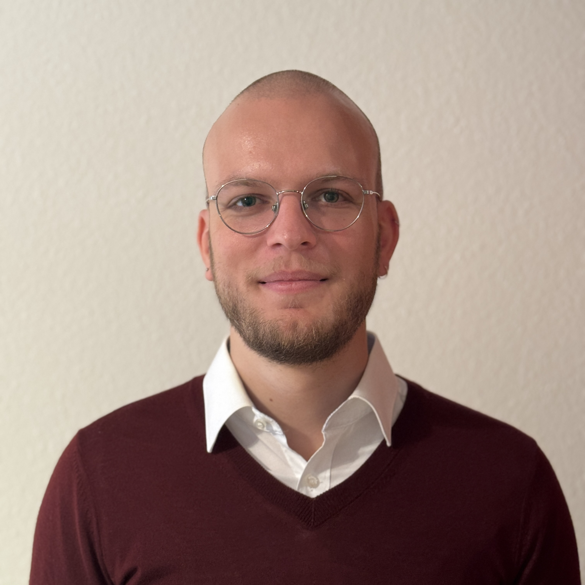

jonas.dann@inf.ethz.chI am a postdoctoral researcher in the Systems Group at ETH Zurich with Professor Gustavo Alonso. My research focuses on heterogeneous computing systems and hardware specialization for data processing in the cloud. I currently work on data processing SmartNICs for the cloud, hardware-software co-design for analytical query execution accelerators, and infrastructure for FPGAs.
I completed my Ph.D. in Computer Science with summa cum laude at Heidelberg University in cooperation with the HANA Database Campus at SAP, advised by Professor Holger Fröning. My dissertation was on hardware specialization for non-relational database management systems. I earned my M.Sc. in Computer Science at Karlsruhe Institute of Technology in 2019 and my B.Sc. in Applied Computer Science in 2016 at DHBW Mannheim.
I am actively looking for tenure-track assistant professorships. If you are interested in working with me, please send me an email (jonas.dann@inf.ethz.ch).